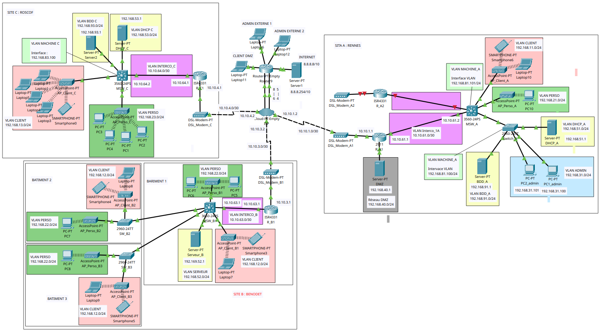

Notre client, une chaîne d'hôtels présente dans les villes Rennes (A), Bénodet (B) et Roscoff (C), cherche à moderniser son infrastructure réseau tout en garantissant une connectivité stable et sécurisée. Chaque site hôtelier présente des caractéristiques uniques en termes de capacité d'accueil, de connectivité Internet et de besoins en gestion interne. Pour le site principal, situé à Rennes, comprenant un immeuble de 50 chambres avec des bureaux de direction, l'objectif est de fournir un réseau Wi-Fi complet, une connexion ADSL redondante pour assurer la continuité des services et d'établir une DMZ pour l'hébergement web de l'ensemble de la chaîne. Le second site, basé dans la ville balnéaire de Bénodet, se compose de trois bâtiments distincts, dont l'un intègre des services de restauration. Une connexion ADSL est disponible, et une infrastructure Wi-Fi doit être établie pour relier les bâtiments et assurer une connectivité adéquate avec le bâtiment principal d'accueil. Enfin, le dernier site, situé dans la ville balnéaire Roscoff, consiste en un seul bâtiment de 20 chambres, avec une connexion ADSL pour fournir des services de base. Afin de mener à bien la modernisation de l’infrastructure réseau, plusieurs objectifs ont été mentionnés. Tout d’abord, nous devons concevoir une architecture réseau sécurisée et performante pour chaque site, en tenant compte des besoins spécifiques en connectivité, gestion interne et accès à Internet. Ensuite, il nous faut établir des solutions de sécurité robustes pour garantir que les clients des hôtels ne puissent pas accéder au réseau interne de l'entreprise tout en permettant un accès Internet via un portail captif. De plus, nous devons mettre en place des réseaux Wi-Fi distincts pour les clients et le personnel de l'entreprise, avec des restrictions d'accès adéquates. Et enfin, il faut assurer une connectivité VPN sécurisée entre les sites distants et le siège social pour la gestion des bases de données locales.

Capture d'écran du projet Packet Tracer